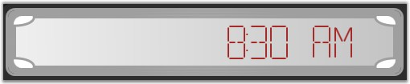
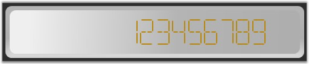

Digital gauge contains variety of built-in frame types to provide effective rim styles. And also you can customize the built-in frame types through digital gauge properties such as FirstFrameThickness, SecondFrameThickness, FirstFrameFillColor, SecondFrameFillcolor and InnerFrameFillcolor.
Following built-in frame types are available in digital gauge.
· Rectangle-digital gauge with default template will be displayed as rectangle shape.
· CroppedRectangle-digital gauge with cropped rectangle.
· BoltedRectangle-digital gauge frame with Bolted style rectangle.
· RoundedRectangleWithInnerGradient-digital gauge frame with inner gradient rounded rectangle.
 Note: Type of the FrameType is
DigitalGaugeFrameType.
Note: Type of the FrameType is
DigitalGaugeFrameType.
The following code example illustrates how to set the frame type for the Digital Gauge.
|
[XAML]
<!--Digital gauge with frame type set to DigitalWithDarkOuterFrames.--> <syncfusion:DigitalGauge Margin="5" Name="digitalGauge1" FrameType=" RoundedRectangleWithInnerGradient "/> |
|
[C#]
// Digital gauge with frame type set to DigitalWithDarkOuterFrames. DigitalGauge digitalGauge1 = new DigitalGauge(); digitalGauge1.FrameType = DigitalGaugeFrameType.RoundedRectangleWithInnerGradient; |
The following screen shots illustrate the different kinds of digital frame types that are available in the gauge library.

Figure 46: Digital Gauge with "BoltedRectangle" Frame
Figure 47: Digital Gauge with "CroppedRectangle" Frame

Figure 48: Digital Gauge with "Rectangle" Frame
Figure 49: Digital Gauge with "RoundedRectangleWithInnerGradient" Frame